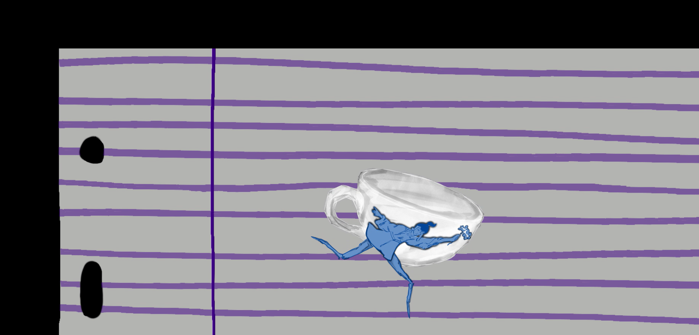
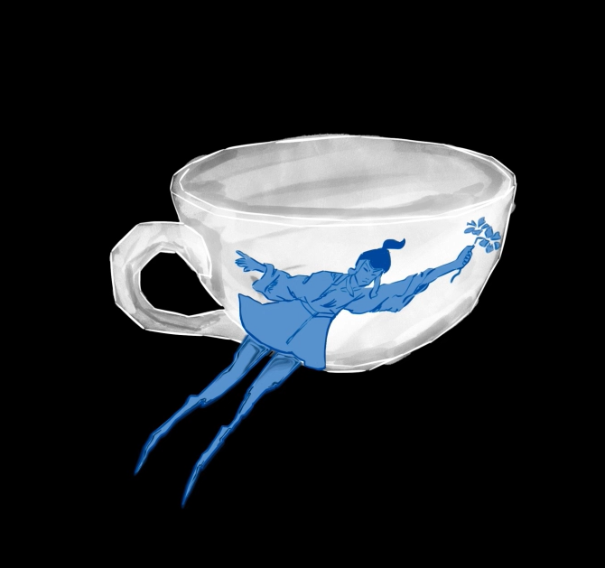
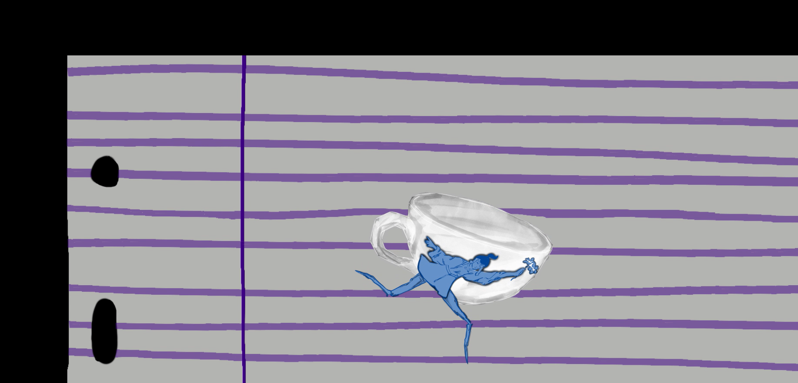
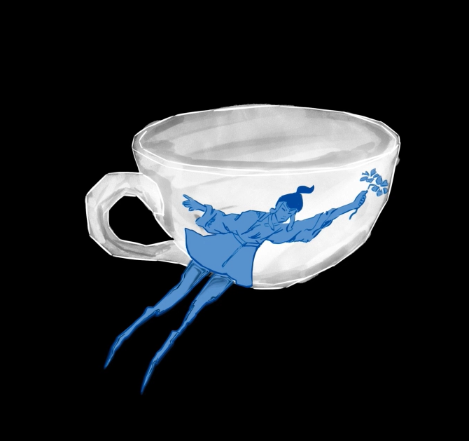
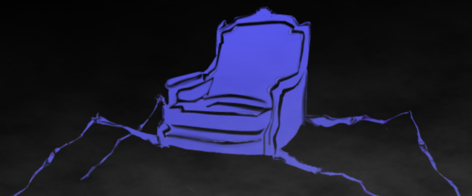
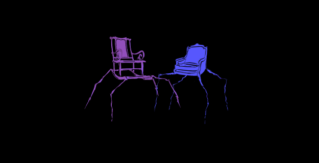
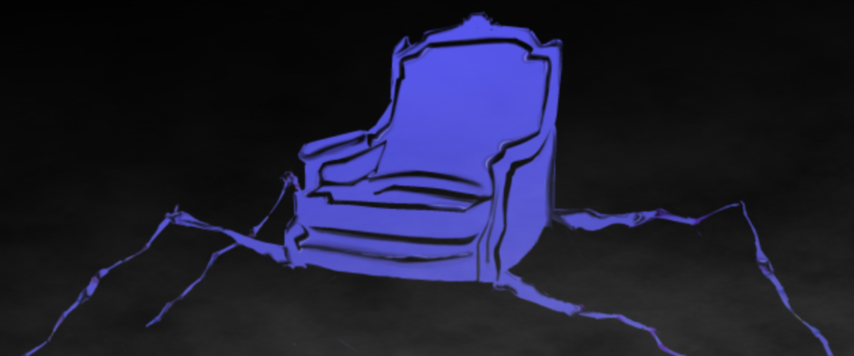
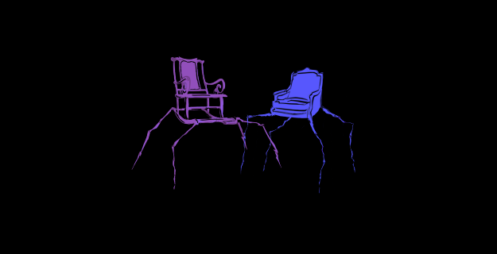

projet d’animation en partenariat avec le Conservatoire à Rayonnement Régional de Boulogne Billancourt avec pour thème la fantaisie lyrique ‘l’Enfant et les Sortilèges’ écrit par Colette et composé par Ravel entre 1919 et 1925, ensuite revisité par le metteur en scène Vincent Vittoz.
la demande était de réaliser des animations en guise de décor pour les performances des élèves du conservatoire, tout en s’inspirant du texte de Colette et en respectant les demandes du commanditaire.
l’intention principale est de retranscrire l’idée de cauchemar et d’étrange lié au texte de Colette dans des visuels cohérents.
on y retrouve des meubles qui prennent vie, de la vaisselle dansante, le tout cohabitant dans une ambiance cauchemardesque qui se traduit par des tons sombres, des membres disloqués fins et longilignes rappelant les pattes d’une araignée, élément fort du cauchemar.
travail réalisé avec Faïza Azaïzia et Flora Soulagnet.
scroll à l'horizontal →

 



 


